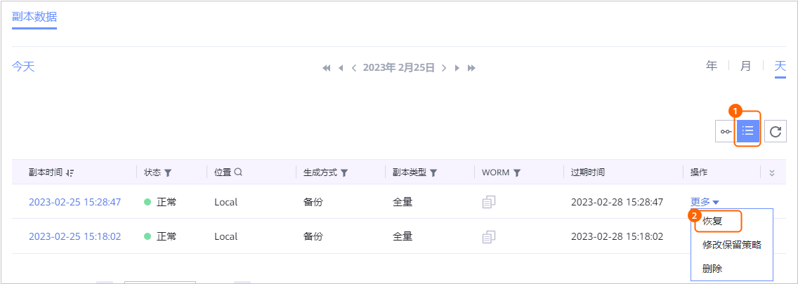

当需要对已备份的数据库进行恢复时，可以参考本节恢复数据库至原位置或新位置。
操作步骤
- 当恢复租户数据库时，恢复前需要先关闭目标数据库。恢复系统数据库时，请跳过该步骤。并确保目标数据库所在集群没有系统数据库正在恢复。
- 使用PuTTY，登录SAP HANA数据库主机。
- 执行以下命令，切换到SAP系统用户。
su - <sid>adm
其中，“sid”为SAP系统ID。例如：
su - s00adm
- 执行以下命令，登录系统数据库。
hdbsql -i 实例id -n 系统数据库主节点的hostname:系统数据库的SQL Port -d SYSTEMDB -u 系统数据库用户名 -p 系统数据库密码
如：
hdbsql -i 00 -n localhost:30013 -d SYSTEMDB -u SYSTEM -p xxxxxxx
- 执行以下命令，关闭目标数据库。
alter system stop database 目标数据库名称;
- 选择“数据利用 > 副本数据 > 应用 > SAP HANA”。
- 支持以数据库维度或以副本维度查找副本，本节以数据库维度为例进行说明。
在“资源”页签，根据数据库名称查找到需要恢复的数据库，并单击数据库名称。
- 在“副本数据”页签，依次选择年、月、天找到副本。
当时间下方显示
 ，即表示该月、该天存在副本。
，即表示该月、该天存在副本。 - 指定副本或时间点进行恢复。
- 指定某个副本或两个副本之间的任意时间点进行恢复。
- 指定某个副本进行恢复

- 指定时间点进行恢复。

时间轴上蓝色覆盖区域均可进行时间点恢复，
 表示该时间点存在副本。没有备份日志的时间点无法进行时间点恢复。
表示该时间点存在副本。没有备份日志的时间点无法进行时间点恢复。
- 指定某个副本进行恢复
- 恢复SAP HANA数据库至原位置或新位置。

恢复系统数据库时，会同步恢复副本中包含的租户数据库信息，可能导致部分租户数据库无法访问。
- 恢复SAP HANA数据库至原位置。
- 选择恢复至“原位置”。
- 选择“使用增量或差异备份副本加速恢复”。
仅日志副本恢复场景支持此功能。
- 单击“确定”。
- 恢复SAP HANA数据库至新位置。
- 恢复SAP HANA数据库至原位置。
- 指定某个副本或两个副本之间的任意时间点进行恢复。
- 单击“确定”。